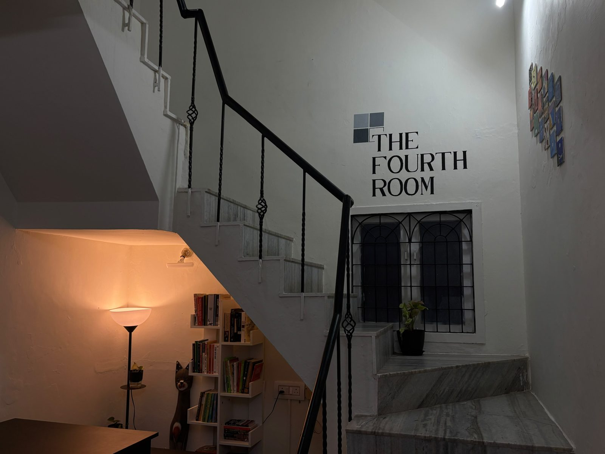
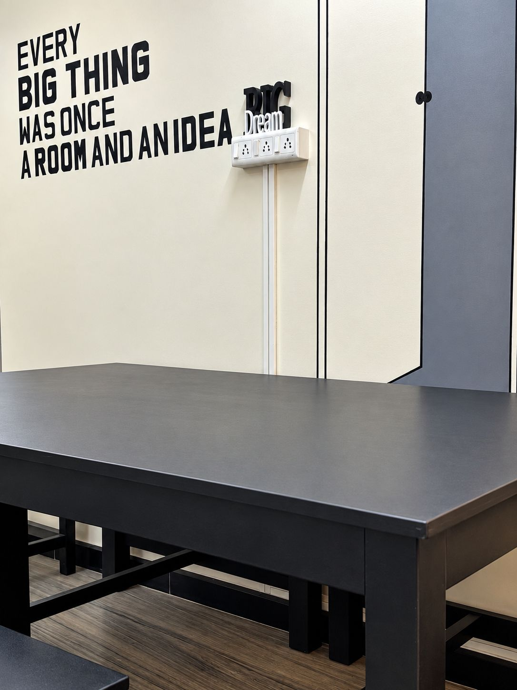

Journal
Ideas for small gatherings.
Formats, how-tos and stories from the people who fill the room.

What is a grief table, and how do you host one?
A grief table is a small, unhurried gathering where people talk about loss over tea. Here's how to host one, what to prepare, and what makes a room feel safe for it.

How to host a startup circle that founders actually come back to
A startup circle is a small, regular meet-up where founders share problems and give honest feedback. Here's a simple format, the right group size, and how to set up the room.